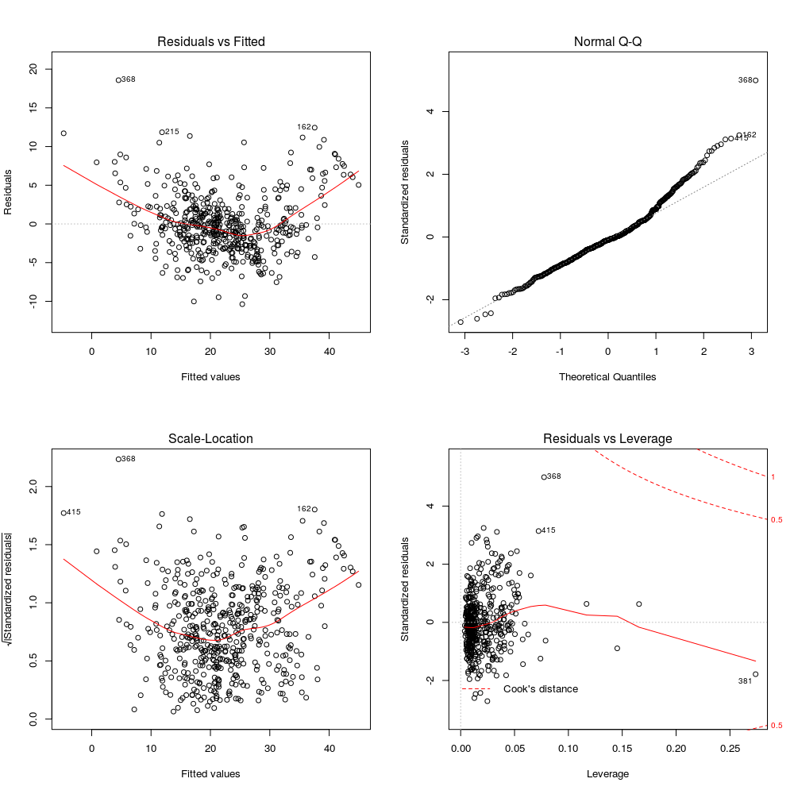
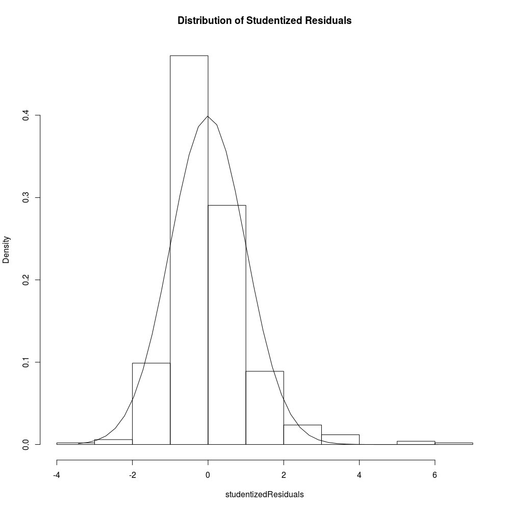
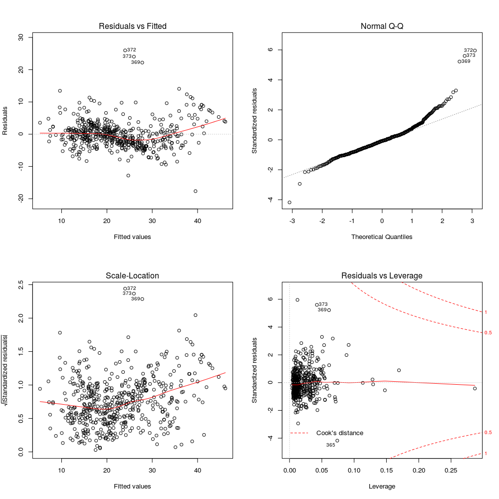
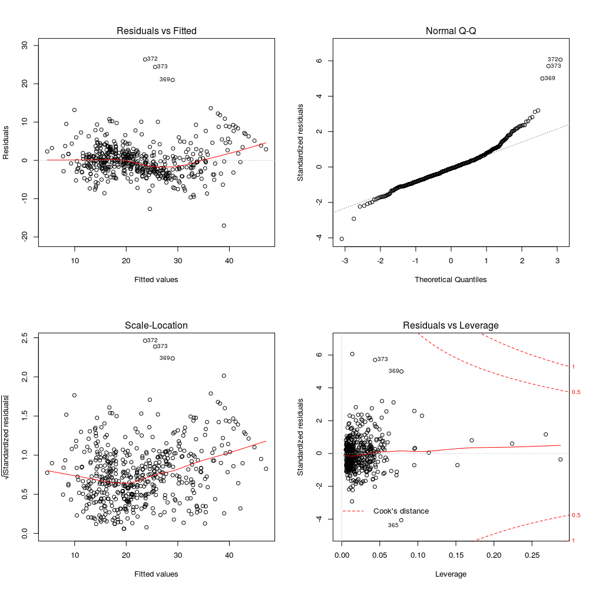

3.
Modeling
Now comes the fun part: finding a linear regression model that best fits our data.
Model 1: All In
For our first model we will go all in with our entire data set. That is, we will use all of our variables and observations in our data frame to predict MEDV using linear regression with the lm() method. Throughout the modeling phase we will fine-tune our working data set using backward selection, which means that we will eliminate variables that are the least statistically significant.
We run our model through the bptest() method to check for heteroskedasticity. Roughly speaking, heteroskedastic data contains non-constant errors, which violates the assumptions for running a linear model. In short, we do not want heteroskedastic data and instead prefer homoskedastic data. Homoskedastic data contains errors that randomly or normally distributed.
Finally we run our model through the vif() method (for variance inflation factor) to check for multicollinearity. Roughly speaking, multicollinearity in a data set means that two or more explanatory variables are highly correlated, hence one of the variables can be linearly predicted as a function of the others. This yields problems in the context of explaining the response variable as a function of its explanatory variables. In short, we do not want multicollinearity.
fit1 <- lm(MEDV ~ ., data = boston.df)
summary(fit1)
bptest(fit1)
vif(fit1)
Below is our terminal output. Here we see the summary of our first model. Notice the Multiple R-squared of 0.7406. In multiple regression, the R-squared is the square of the correlation between the response and fitted (predicted) linear model. This means that the higher our R-squared the better job our model is doing at predicting the response variable. We will need to run some diagnostics on our model before believing our R-squared value.
> # model 1
> fit1 <- lm(MEDV ~ ., data = boston.df)
> summary(fit1)
Call:
lm(formula = MEDV ~ ., data = boston.df)
Residuals:
Min 1Q Median 3Q Max
-15.5857 -2.7248 -0.5114 1.7846 26.2018
Coefficients:
Estimate Std. Error t value Pr(>|t|)
(Intercept) 3.648e+01 5.105e+00 7.147 3.23e-12 ***
CRIM -1.071e-01 3.277e-02 -3.268 0.001159 **
ZN 4.636e-02 1.373e-02 3.377 0.000791 ***
INDUS 2.090e-02 6.150e-02 0.340 0.734161
CHAS1 2.690e+00 8.617e-01 3.122 0.001905 **
NOX -1.780e+01 3.821e+00 -4.658 4.12e-06 ***
RM 3.809e+00 4.180e-01 9.113 < 2e-16 ***
AGE 7.256e-04 1.321e-02 0.055 0.956225
DIS -1.475e+00 1.995e-01 -7.396 6.11e-13 ***
RAD 3.053e-01 6.632e-02 4.604 5.29e-06 ***
TAX -1.233e-02 3.761e-03 -3.278 0.001120 **
PTRATIO -9.531e-01 1.308e-01 -7.284 1.29e-12 ***
B 9.330e-03 2.686e-03 3.474 0.000558 ***
LSTAT -5.253e-01 5.070e-02 -10.361 < 2e-16 ***
---
Signif. codes: 0 ‘***’ 0.001 ‘**’ 0.01 ‘*’ 0.05 ‘.’ 0.1 ‘ ’ 1
Residual standard error: 4.746 on 492 degrees of freedom
Multiple R-squared: 0.7406, Adjusted R-squared: 0.7337
F-statistic: 108 on 13 and 492 DF, p-value: < 2.2e-16
Below we see the terminal output from our bptest(fit1) script, which tells us about the heteroskedasticity of our model. The p-value that we obtain from this diagnostic is very small, which suggests that our data is homoskedastic (not heteroskedastic). This is good, because as we mentioned earlier, we need homoskesdastic data to run a linear regression model.
> bptest(fit1)
studentized Breusch-Pagan test
data: fit1
BP = 65.045, df = 13, p-value = 6.47e-09
Below we see the terminal output from our vif(fit1) script, which tells us about the multicollinearity of our model. VIF values higher than 5 are considered to be problematic, so we drop them from the model. TAX has the highest VIF value at 9.0085, so we drop it first.
> vif(fit1)
CRIM ZN INDUS CHAS1 NOX RM AGE DIS RAD TAX PTRATIO B
1.7776 2.2984 3.9912 1.0739 4.3951 1.9338 3.1008 3.9562 7.4769 9.0085 1.7992 1.3481
LSTAT
2.9391
Model 2: Removing Collinear Variable (TAX)
Now onto our second model; this time without the TAX variable (we removed it because of high multicollinearity). We use the update() method to recycle our first model while removing TAX. Use vif() and summary() again to diagnose.
fit2 <- update(fit1, ~ . - TAX)
vif(fit2)
summary(fit2)
We can see below that none of our variables exhibit VIF values above 5. Dropping TAX above addressed the issue of collinearity.
> fit2 <- update(fit1, ~ . - TAX)
> vif(fit2) # collinearity seems to no longer be an issue
CRIM ZN INDUS CHAS1 NOX RM AGE DIS RAD PTRATIO B LSTAT
1.7773 2.1840 3.2255 1.0581 4.3707 1.9232 3.0981 3.9547 2.8316 1.7889 1.3471 2.9384
Now we drop variables that are not significant statistically. Based on their p-values AGE, INDUS are the least statistically significant variables, so we drop them. RAD will also prove not to be significant later in the project, so we will go ahead and drop in now as well.
> summary(fit2)
Call:
lm(formula = MEDV ~ CRIM + ZN + INDUS + CHAS + NOX + RM + AGE +
DIS + RAD + PTRATIO + B + LSTAT, data = boston.df)
Residuals:
Min 1Q Median 3Q Max
-16.1361 -2.9142 -0.5677 1.7473 26.3135
Coefficients:
Estimate Std. Error t value Pr(>|t|)
(Intercept) 3.465e+01 5.124e+00 6.763 3.85e-11 ***
CRIM -1.059e-01 3.309e-02 -3.199 0.001466 **
ZN 3.632e-02 1.351e-02 2.688 0.007441 **
INDUS -6.740e-02 5.583e-02 -1.207 0.227909
CHAS1 3.032e+00 8.637e-01 3.510 0.000489 ***
NOX -1.873e+01 3.848e+00 -4.868 1.52e-06 ***
RM 3.911e+00 4.209e-01 9.291 < 2e-16 ***
AGE -5.717e-04 1.334e-02 -0.043 0.965820
DIS -1.488e+00 2.014e-01 -7.388 6.40e-13 ***
RAD 1.340e-01 4.121e-02 3.250 0.001232 **
PTRATIO -9.855e-01 1.318e-01 -7.479 3.45e-13 ***
B 9.564e-03 2.711e-03 3.528 0.000459 ***
LSTAT -5.228e-01 5.119e-02 -10.212 < 2e-16 ***
---
Signif. codes: 0 ‘***’ 0.001 ‘**’ 0.01 ‘*’ 0.05 ‘.’ 0.1 ‘ ’ 1
Residual standard error: 4.793 on 493 degrees of freedom
Multiple R-squared: 0.7349, Adjusted R-squared: 0.7285
F-statistic: 113.9 on 12 and 493 DF, p-value: < 2.2e-16
Model 3: Removing Non-Significant Variables (AGE, INDUS, RAD)
Now we run our third model. For this iteration we have removed the TAX, AGE, INDUS, and RAD variables.
fit3 <- update(fit2, ~ . - AGE - INDUS - RAD)
summary(fit3)
The summary of our model tells us that our least significant variable, CRIM, is somewhat significant with a p-value of 0.045211. We can now stop dropping variables. We can now move to another set of diagnostics.
> summary(fit3)
Call:
lm(formula = MEDV ~ CRIM + ZN + CHAS + NOX + RM + DIS + PTRATIO +
B + LSTAT, data = boston.df)
Residuals:
Min 1Q Median 3Q Max
-15.7992 -2.8295 -0.6366 1.4538 27.7639
Coefficients:
Estimate Std. Error t value Pr(>|t|)
(Intercept) 29.532746 4.871753 6.062 2.66e-09 ***
CRIM -0.060875 0.030320 -2.008 0.045211 *
ZN 0.041990 0.013420 3.129 0.001858 **
CHAS1 3.031435 0.868341 3.491 0.000524 ***
NOX -16.108765 3.231948 -4.984 8.61e-07 ***
RM 4.148616 0.407676 10.176 < 2e-16 ***
DIS -1.431863 0.188629 -7.591 1.59e-13 ***
PTRATIO -0.839130 0.117312 -7.153 3.07e-12 ***
B 0.008304 0.002687 3.090 0.002115 **
LSTAT -0.525271 0.048333 -10.868 < 2e-16 ***
---
Signif. codes: 0 ‘***’ 0.001 ‘**’ 0.01 ‘*’ 0.05 ‘.’ 0.1 ‘ ’ 1
Residual standard error: 4.833 on 496 degrees of freedom
Multiple R-squared: 0.7288, Adjusted R-squared: 0.7239
F-statistic: 148.1 on 9 and 496 DF, p-value: < 2.2e-16
Diagnosing for Outliers and High-Leverage Points
Now we will run our model through the outlierTest() to check for ourliers and high leverage points in our data. Linear regression model operates under the assumption of no outliers or high leverage points.
outlierTest(fit3, cutoff = Inf, n.max = 15)
Below we see the terminal output for the outliers' test. Observations with an absolute value greater than 3 for their studentized residuals are considered problematic, so we remove them from the model.
> outlierTest(fit3, cutoff = Inf, n.max = 15)
rstudent unadjusted p-value Bonferonni p
369 6.092529 2.2351e-09 1.1310e-06
372 5.574201 4.0923e-08 2.0707e-05
373 5.359796 1.2797e-07 6.4753e-05
370 3.850413 1.3339e-04 6.7495e-02
413 3.640090 3.0121e-04 1.5241e-01
365 -3.430779 6.5219e-04 3.3001e-01
371 3.393272 7.4602e-04 3.7749e-01
366 3.296554 1.0491e-03 5.3084e-01
187 3.036950 2.5159e-03 NA
375 3.030376 2.5703e-03 NA
368 2.925366 3.5985e-03 NA
215 2.745190 6.2675e-03 NA
254 2.642637 8.4869e-03 NA
162 2.563096 1.0669e-02 NA
229 2.466038 1.4000e-02 NA
We see that rows 369, 372, 373, 370, 413, 365, 371, 366, 187, and 375 meet the criteria for removal as their studentized residuals have absolute values above 3.
Model 4: Removing Outliers and High-Leverage Points
Next we update our data frame by removing the outlier observations, declare our fourth model, and get some residual diagnostics.
boston.df <- boston.df[-c(369, 372, 373, 370, 413, 365, 371, 366, 187, 375),]
fit4 <- lm(MEDV ~ . - TAX - AGE - INDUS - RAD, data = boston.df)
summary(fit4)
par(mfrow = c(2,2))
plot(fit4)
Here we get the summary of our model. It looks like LSTAT is our most significant variable along with RM. Our R-squared is 0.808, and since it is close to 1, we can say that our model explains a large part of our response variable. Our residual standard error (RSE) is fairly small at 3.87, which is good. Let's see if we can do better.
> fit4 <- lm(MEDV ~ . - TAX - AGE - INDUS - RAD, data = boston.df)
> summary(fit4)
Call:
lm(formula = MEDV ~ . - TAX - AGE - INDUS - RAD, data = boston.df)
Residuals:
Min 1Q Median 3Q Max
-10.366 -2.445 -0.365 1.878 18.576
Coefficients:
Estimate Std. Error t value Pr(>|t|)
(Intercept) 17.97862 4.07449 4.41 1.3e-05 ***
CRIM -0.08140 0.02434 -3.34 0.00089 ***
ZN 0.02476 0.01083 2.29 0.02272 *
CHAS1 1.73848 0.73476 2.37 0.01837 *
NOX -15.08921 2.63351 -5.73 1.8e-08 ***
RM 5.60147 0.35264 15.88 < 2e-16 ***
DIS -0.99624 0.15342 -6.49 2.1e-10 ***
PTRATIO -0.95159 0.09566 -9.95 < 2e-16 ***
B 0.00928 0.00218 4.25 2.5e-05 ***
LSTAT -0.37237 0.04154 -8.96 < 2e-16 ***
---
Signif. codes: 0 ‘***’ 0.001 ‘**’ 0.01 ‘*’ 0.05 ‘.’ 0.1 ‘ ’ 1
Residual standard error: 3.87 on 486 degrees of freedom
Multiple R-squared: 0.808, Adjusted R-squared: 0.805
F-statistic: 228 on 9 and 486 DF, p-value: < 2e-16
But first, let's take a look at a few residual diagnostics plots for our fourth model. Given the curve in our Residuals vs Fitted plot below we can infer that there is non-linearity in our data.

For this reason we will include non-linear terms in our model in the next couple of iterations.
Diagnosing Residuals (Checking for Normality of Residuals)
Another assumption for linear regression is normality of residual terms. For this we use the studres() and hist() methods.
studentizedResiduals <- studres(fit4)
par(mfrow = c(1,1))
hist(studentizedResiduals, freq = FALSE, main = "Distribution of Studentized Residuals")
xfit <- seq(min(studentizedResiduals), max(studentizedResiduals), length = 40)
yfit <- dnorm(xfit)
lines(xfit, yfit)
We also fit a curve using the lines() method.

Here we see that the residuals of our model display a normal distribution; which is good as this is a linear regression assumption.
Model 5: Adding Non-Linear Terms
Now onto the fifth iteration of our model with non-linear terms. Here we include an LSTAT-squared by adding I(LSTAT^2) to the model. We can infer a non-linear relationship between the response variable and our model in the residual diagnostics for model 4. Furthermore, we can sense a non-linear relationship between LSTAT and MEDV from the exploratory analysis phase.
fit5 <- lm(MEDV ~ . - TAX - AGE - INDUS - RAD + I(LSTAT^2), data = boston.df)
summary(fit5)
par(mfrow = c(2,2))
plot(fit5)
In our model summary below we see that I(LSTAT^2) is indeed statistically significant, more so than most other explanatory variables. Our R-squared has increased to 0.833 (which is good) and our RSE has decreased to 3.62 (which is also good).
> fit5 <- lm(MEDV ~ . - TAX - AGE - INDUS - RAD + I(LSTAT^2), data = boston.df)
> summary(fit5)
Call:
lm(formula = MEDV ~ . - TAX - AGE - INDUS - RAD + I(LSTAT^2),
data = boston.df)
Residuals:
Min 1Q Median 3Q Max
-10.741 -2.258 -0.373 1.870 17.800
Coefficients:
Estimate Std. Error t value Pr(>|t|)
(Intercept) 24.23908 3.87861 6.25 9.0e-10 ***
CRIM -0.10742 0.02295 -4.68 3.7e-06 ***
ZN 0.01082 0.01026 1.06 0.2917
CHAS1 1.85177 0.68672 2.70 0.0073 **
NOX -12.22305 2.48406 -4.92 1.2e-06 ***
RM 4.94750 0.33846 14.62 < 2e-16 ***
DIS -0.97208 0.14339 -6.78 3.5e-11 ***
PTRATIO -0.80859 0.09098 -8.89 < 2e-16 ***
B 0.00821 0.00204 4.02 6.8e-05 ***
LSTAT -1.24614 0.11033 -11.30 < 2e-16 ***
I(LSTAT^2) 0.02503 0.00296 8.46 3.2e-16 ***
---
Signif. codes: 0 ‘***’ 0.001 ‘**’ 0.01 ‘*’ 0.05 ‘.’ 0.1 ‘ ’ 1
Residual standard error: 3.62 on 485 degrees of freedom
Multiple R-squared: 0.833, Adjusted R-squared: 0.83
F-statistic: 242 on 10 and 485 DF, p-value: < 2e-16
Given the significance of I(LSTAT^2) it may make sense to include a third-level polynomial for LSTAT. Let's try that in the next model. But first, let's take a look at our Residuals vs Fitted plot.

We can see that our model is doing a little better as far as linearity is concerned, compared to our previous model.
Model 6: More Non-Linearity
Now onto model 6. Here we are adding I(LSTAT^3) to our model given the statistical significance of I(LSTAT^2). We'll run some diagnostics to see if this makes sense or if we have gone too far.
fit6 <- lm(MEDV ~ . - TAX - AGE - INDUS - RAD + I(LSTAT^2) + I(LSTAT^3), data = boston.df)
summary(fit6)
Given its p-value, it looks like I(LSTAT^3) does not add much to the model. We do notice a slight increase in the R-squared value to 0.834 and a slight decrease in the MSE value to 3.61. We are not sure this might be an improvement, however, as we have traded simplicity (or interpretability) in the model for little accuracy improvement.
> fit6 <- lm(MEDV ~ . - TAX - AGE - INDUS - RAD + I(LSTAT^2) + I(LSTAT^3), data = boston.df)
> summary(fit6)
Call:
lm(formula = MEDV ~ . - TAX - AGE - INDUS - RAD + I(LSTAT^2) +
I(LSTAT^3), data = boston.df)
Residuals:
Min 1Q Median 3Q Max
-10.640 -2.211 -0.263 1.909 17.495
Coefficients:
Estimate Std. Error t value Pr(>|t|)
(Intercept) 2.82e+01 4.34e+00 6.50 2.0e-10 ***
CRIM -1.07e-01 2.29e-02 -4.69 3.6e-06 ***
ZN 7.28e-03 1.04e-02 0.70 0.48302
CHAS1 1.77e+00 6.86e-01 2.57 0.01034 *
NOX -1.25e+01 2.48e+00 -5.04 6.5e-07 ***
RM 4.71e+00 3.58e-01 13.14 < 2e-16 ***
DIS -9.59e-01 1.43e-01 -6.70 5.7e-11 ***
PTRATIO -8.19e-01 9.08e-02 -9.02 < 2e-16 ***
B 8.29e-03 2.04e-03 4.07 5.5e-05 ***
LSTAT -1.77e+00 2.82e-01 -6.27 7.8e-10 ***
I(LSTAT^2) 5.98e-02 1.75e-02 3.41 0.00071 ***
I(LSTAT^3) -6.66e-04 3.31e-04 -2.01 0.04510 *
---
Signif. codes: 0 ‘***’ 0.001 ‘**’ 0.01 ‘*’ 0.05 ‘.’ 0.1 ‘ ’ 1
Residual standard error: 3.61 on 484 degrees of freedom
Multiple R-squared: 0.834, Adjusted R-squared: 0.831
F-statistic: 222 on 11 and 484 DF, p-value: < 2e-16
Observing our residual diagnostics, there seems to be little difference between our results across model 5 and 6.

Now we are ready to move on to the model diagnostics stage, to which which of our models does best at estimating our response variable.